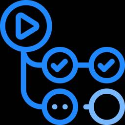

レコチョクのエンジニアブログ
https://techblog.recochoku.jp
最新のIT技術を駆使して音楽関連サービスを展開しています。日々の活動内容から得た知識をお届けする開発ブログです。 We're using the latest IT and we are developing music service.The developers blog which we'll report the knowledge we got from the daily activity contents.
フィード

GitHub Actionsを駆使したカバレッジの自動計測と差分レポート生成
レコチョクのエンジニアブログ
<p><img width="200" height="200" src="https://techblog.recochoku.jp/wp-content/uploads/2025/06/GitHub-Actions-200x200.png" class="attachment-thumbnail size-thumbnail wp-post-image" alt="" /></p><h2>はじめに</h2>NX開発推進部プロダクト開発第1G の杉山です。Androidエンジニアとして日々開発を行っております。ここ一ヶ月の週末の内、名古屋を3往復もしており、一体どこ住みなのかと皆に聞かれている次第です。<del>そろそろ名古屋に別荘でも持つべきかと悩んでいます。</del>そんなことはさておき、近年社内の取り組みとしてアプリの品質改善を強化しており、リリース前のテストはもちろんのこと日々の開発の中でUT(ユニットテスト)の拡充を行っております。今回はそのUTのカバレッジをGitHub Actionsを使ってブランチごとに計測し、差分を算出できるようにしました。<h2>背景</h2>差分を算出しようと考えた背景として、UTの作成が十分に意識されず、見逃されたり後回しにされたりする現状があります。この状況を改善し、UT作成への意識をより強化したいと考えました。以前から、PR時にカバレッジの計測は行われており、マージ後のカバレッジを把握することは可能でした。しかし、個々のPRによって具体的にどの程度カバレッジが上昇したのかを把握することができず、UTの実装が不十分だった場合にPRの段階で検出できるようにはなっていませんでした。そのため、GitHub Actionsを用いてこれを改善し、実装しました。<h2>実現したいこと</h2>今回実現したいことは以下の3つになります。<ul><li>PR対象のターゲットブランチ(developブランチ)とソースブランチ(featureブランチ)それぞれのカバレッジを算出する</li><li>各ブランチのカバレッジをファイルに保存して参照できるようにする</li><li>各ファイルを用いてカバレッジの差分算出をする</li></ul>上記を実現することで、PRの段階でカバレッジの差分を見てUTの実装ができているかどうかを確認することが
5日前

【iOS】MetricKit で見つけたボトルネックをこう直した！「もっさり感」解消までの実装と効果
レコチョクのエンジニアブログ
<p><img width="200" height="200" src="https://techblog.recochoku.jp/wp-content/uploads/2024/06/swift-200x200.png" class="attachment-thumbnail size-thumbnail wp-post-image" alt="" /></p><h2>はじめに</h2>こんにちは、後藤です。株式会社レコチョクでiOSアプリの開発をしています。最近のブームはTOMOOの地下鉄モグラロードです。先月の武道館ライブも最高でした。さて、以前の記事<a href="https://techblog.recochoku.jp/11610">【iOS】iOSアプリの「もっさり感」を追いかける！MetricKitの活用法</a>では、MetricKitを用いてアプリの「もっさり感」の原因を調査し、楽曲取得処理におけるハング時間の増加が主な原因であることを突き止めました。今回は、その原因をどのように改善し、どの程度効果があったのかを定量的なデータとともに紹介します。<h2>実行環境</h2><table><thead><tr> <th>ツール</th> <th>バージョン</th></tr></thead><tbody><tr> <td>Xcode</td> <td>16.3</td></tr><tr> <td>iOS</td> <td>18.5</td></tr></tbody></table>開発中のハング時間の確認には、デベロッパーモードのHang Detectionを使って検出しました。<a href="https://developer.apple.com/documentation/xcode/improving-app-responsiveness#Detect-hangs-and-hang-risks">Detect hangs and hang risks</a><h2>ボトルネックの発見と問題点</h2>改善前の楽曲取得処理は次のフローでした。<ol><li>APIから楽曲リストを取得 </li><li>返ってきた楽曲と同じ楽曲IDを持つ楽曲をCoreDataから検索</li><li>差分があればCoreDataを更新し保存</li></o
9日前
CDN事業者破産による緊急移管対応とEMの意思決定・学び
レコチョクのエンジニアブログ
<p><img width="200" height="200" src="https://techblog.recochoku.jp/wp-content/uploads/2025/06/AdobeStock_532614250-200x200.jpg" class="attachment-thumbnail size-thumbnail wp-post-image" alt="" /></p><h2>はじめに</h2>システム開発推進部第2Gの曽利田です。株式会社レコチョクでエンジニアリングマネージャーをしています。Switch2の抽選結果メールが届くたび、「また落選か…」と肩を落とす日々が続いています。ちなみに、CDN移管対応をしていたのは、Switch2の当選を夢見始めるよりも約6ヶ月も前のこと。Switch2はまだ手に入りませんが、<del>CDNの安定配信はしっかり手に入れました！</del>※つい最近のことですが、半年経って時限爆弾的問題が発生したので上記取り消します。。。詳細は別途ということで、<h2>要約</h2>2024年末、突如として約1ヶ月後のサービス終了を告げられたCDNからの移行プロジェクト。30万件以上の動画ファイルを対象に、年末年始を返上して技術検証から実装、リリースまでを完遂した取り組みを紹介します。<h2>背景</h2>2024年9月頃、弊社で利用していたCDN事業者がChapter 11（米連邦破産法第11条）を申請し、裁判所管理下で再建を進める状況となりました。当初は「すぐにサービスが停止することはない」との見解でしたが、今後の安定性を懸念し、CDN移行の検討を開始しました。CDNの利用形態は大きく以下に分類されます：<ul><li>一般的なキャッシュ機能＋URL保護</li><li>音楽配信・動画配信における特殊な配信機能（on-the-fly（リアルタイム）変換）</li></ul>特に音楽・動画配信では、以下のような特殊処理をCDN上で行っていました：<ul><li><strong>音楽再生（PCブラウザ）</strong>：m4a形式の音源をon-the-flyでm3u8へ変換し、HLS形式で配信</li><li><strong>DRM付き動画再生（アプリ/PCブラウザ）</strong>：mp4動画をon-the-f
15日前
【AWS】MediaPackageのVOD動画変換をLambdaで自動化してみた
レコチョクのエンジニアブログ
<p><img width="200" height="200" src="https://techblog.recochoku.jp/wp-content/uploads/2018/04/aws_logo-200x200.png" class="attachment-thumbnail size-thumbnail wp-post-image" alt="" /></p><h2>はじめに</h2>システム開発推進部第2Gの笹野です。今回はAWSで動画納品後のHLS変換を自動化したことについてまとめました。諸事情により、もともと利用していたCDNのサービスをAWSに移行する必要が生じたのですが、もとのサービスで配信のための動画変換も行っていたため、動画の変換処理もAWSに移行しました。今回は、動画の納品からHLS変換して配信できるようにするまでのフローを、Lambdaを使って自動化するという対応をしましたので、一例として紹介できればと思います。<h2>納品からHLS変換の手順</h2>以下AWSで作成済みの環境でのHLS変換手順です。「S3に動画ファイルをアップロード」をきっかけに以降の手順が自動化されることを目指します。<ul><li>S3上に動画単位でディレクトリが作成される&3つの画質別mp4がアップロードされる</li><li>アップロードされた動画ファイル名からsmilファイルを作成して同ディレクトリにアップロード</li><li>作成したsmilファイルを元にMediaPackageでアセット作成</li><li>配信サービス上の動画IDとアセット情報(再生URL)を紐づけるテーブルに登録</li></ul>以降でも最後の紐づけテーブルに登録する手順についてほんの少々触れますが、サービス固有の仕組みになるので、適宜読み飛ばしていただければと思います。<h2>変換フローとAWS構成図</h2>自動化にあたっての処理フローと構成図です。1. S3に動画が納品2. mp4ファイルのアップロードをきっかけにLambdaをトリガー3. 動画が3つある場合、LambdaからMediaPackageのアセットを作成4. アセットの作成完了をきっかけにEventBridgeからLambdaをトリガー5. LambdaからRDSに動画配信データを登録<img sr
1ヶ月前
楽曲ストリーミング配信のCDN移行を行った話
レコチョクのエンジニアブログ
<p><img width="200" height="200" src="https://techblog.recochoku.jp/wp-content/uploads/2025/06/CDN-200x200.png" class="attachment-thumbnail size-thumbnail wp-post-image" alt="" /></p><h1>はじめに</h1>はじめまして。システム開発推進部第2Gの山本です。フロントエンドやバックエンドの開発を主に行っております。今回は担当している音楽配信サービスの楽曲配信のCDN移行を行った話について記載します。弊社では音楽配信サービスを提供しており、HLS (HTTP Live Streaming) を用いた楽曲のストリーミング配信を行っています。これまでストリーミング配信時に利用していたCDN事業者のCDNサービスが終了するとの通知があったため、急ぎで新たなCDNの選定が必要になりました。当初、CDNの乗り換え先としてAWS CloudFront を候補として検討しましたが、初回リクエスト時の HLS変換 に時間がかかることが課題となり、最終的に Fastly CDNを採用することになりました。本記事では、CloudFrontを利用したHLS変換の仕組みを説明し、最終的にFastly CDNへ移行するまでの流れを紹介します。<h1>旧CDNからのHLS配信について</h1>今まで使用していたCDNでは以下のフローでHLS配信を行っていました。<h2>旧CDNでの配信フロー</h2><ol><li>ユーザーが CDN に楽曲をリクエスト</li><li>CDN がキャッシュを確認し、キャッシュがあればそのまま返却</li><li>キャッシュがない場合は、楽曲取得API へリクエストを送信し m4a 形式の楽曲を取得</li><li>CDN が m4a を HLS (m3u8 + TS) に変換</li><li>HLS変換後の m3u8 + TS をユーザーへ返却</li><li>CDN が変換済みの HLS ファイルをキャッシュ</li></ol>新たなCDNでも同様の配信フローを維持しつつ、HLS 変換を適切に処理できるような仕組みを構築する必要がありました。<h1>CloudFront + La
1ヶ月前
フローチャートで判断！ CloudFormationのスタック分割方法
レコチョクのエンジニアブログ
<p><img width="200" height="200" src="https://techblog.recochoku.jp/wp-content/uploads/2018/04/aws_logo-200x200.png" class="attachment-thumbnail size-thumbnail wp-post-image" alt="" /></p><h2>はじめに</h2>システム開発推進部システム開発第4グループの岩田です。最近、CloudFormationを使用してインフラの構築を行っています。その際、複数人で開発を進める中で、CloudFormationのスタックをどのように分割すれば管理しやすくなるのかという課題に直面しました。しかし、調べてみるとスタックの分割方法に明確な分割基準は無く、個人の裁量に委ねられているのが現状でした。そこで本記事では、スタック分割における判断基準を提示したいと思います。スタックを分割する方法を決めるきっかけになればと思います。<h2>CloudFormationとは</h2><a href="https://aws.amazon.com/jp/cloudformation/">CloudFormation</a>とは、インフラ構築をコードで行う<strong>IaC(Infrastructure as Code)</strong>を実現するAWSのサービスのことです。例えば、以下のようなインフラ構成も、<img src="/wp-content/uploads/2025/05/3db2ad66edf9436b46a4c9f986273ec9.png" alt="技術記事用インフラ構成.png" />下記のようなコードで実現できます。[crayon-68693f23307f1968294118/]IaCには、手作業による設定ミスを防ぎ、同じ環境を何度でも正確に再現できるといったメリットがあります。また、CloudFormationはリソースの依存関係を自動で解決してくれます。そのため、開発者はテンプレートファイルに利用したいAWSリソースを定義するだけでインフラ構築が可能になります。<h2>スタックとは</h2>スタックとは、AWSリソースの集合体のことです。1つのスタックには1つ以上のAWSリソースが関
1ヶ月前
開発生産性のリードタイム1.5倍・デプロイ頻度2倍！実践した開発生産性改善施策の振り返り
レコチョクのエンジニアブログ
<p><img width="200" height="200" src="https://techblog.recochoku.jp/wp-content/uploads/2021/12/document_data_bunseki-200x200.png" class="attachment-thumbnail size-thumbnail wp-post-image" alt="" /></p>昔あこがれていたギターを買ったり、ギター熱が更に熱くなっている村田です。<br />株式会社レコチョクでエンジニアリングマネージャーをしています。今回は実際に行った開発生産性向上の取り組みについて、その結果をご紹介します。<h2>はじめに</h2>この記事は、<a href="https://techblog.recochoku.jp/11277">ネイティブアプリ開発チームの開発生産性の指標を定義してみた</a>の続きとなります。<br />前回の記事では、開発生産性の定義と、その評価指標についてご紹介しました。<br />今回は実際に行った取り組みについて振り返り、開発生産性向上の具体的な成果をご紹介します。<h2>目次</h2><ul><li><a href="#取り組み概要">取り組み概要</a></li><li><a href="#評価指標">評価指標</a></li><li><a href="#目標振り返り">目標振り返り</a></li><li><a href="#得られた効果">得られた効果</a></li><li><a href="#最後に">最後に</a></li></ul><h2>取り組み概要</h2>今回の取り組みは、まさに「開発生産性の向上」というシンプルな目的からスタートしました。開発生産性の向上と言っても、定量的に測れなければ向上したかどうかを判断できません。そこで、まずは指標を定義して、判断ができる状態まで持っていくことが必要と考えました。そのため、まずは「開発生産性って何？」という定義から始め、定量的に評価できる指標を可視化出来るよう<a href="https://findy-team.io/">Findy Team+</a>というツールを導入し、開発チーム内で振り返りの場を作り振り返ることで、先行指標の向上・結果指標の向上を目指して進
1ヶ月前
[Docsify]Notionライクなドキュメントを作ろう！！
レコチョクのエンジニアブログ
<p><img width="174" height="174" src="https://techblog.recochoku.jp/wp-content/uploads/2025/05/Docsify.png" class="attachment-thumbnail size-thumbnail wp-post-image" alt="" /></p><h1>はじめに</h1>Y'all !!レコチョクでWeb開発の担当しているH.Oです。皆さんは社内ナレッジをどのように管理していますか？Notion? Confluence? Git管理系のwiki??しかしお金がかかったり、変な操作で壊れたりなどの苦い経験があると思います！そんなあなたにおすすめしたいのがこちら<h1>Docsifyについて</h1><a href="https://docsify.js.org">https://docsify.js.org</a>ドキュメント静的ジェネレータになります。似たようなサービスでは他にgitbookやSphinxなどがありますが、それらと比べ検索精度の良さ、軽さ、導入の簡単さなどがあげられる結果からこちらをドキュメント閲覧用としてすごくおすすめします<h1>導入メリット・デメリット</h1><h2>メリット</h2><ul><li>検索精度が良い</li><li>導入が簡単</li><li>サーバを立てなくても最新のドキュメントを気軽に閲覧できる</li><li>Gitで管理ができる</li><li>見やすい（<a href="https://docsify.js.org/#/themes">テーマ</a>が選択できる）</li><li>可愛い</li><li>廃止から移行する際markdownなので簡単にできる。</li><li>最終更新者がすぐわかる</li><li>可愛い</li></ul><h2>デメリット</h2><ul><li>Markdownの学習コスト</li><li>doctifyの拡張の学習コスト</li><li>ローカルで編集して閲覧する場合Dockerを立ち上げる必要がある</li></ul><h1>ファイル構成</h1>以下のような構成で作っていきます。[crayon-68693f233137b615236451/]<h1>導入手順</h
1ヶ月前
Tailwind CSSのカスタマイズ方法
レコチョクのエンジニアブログ
<p><img width="200" height="200" src="https://techblog.recochoku.jp/wp-content/uploads/2024/04/css-icon-200x200.png" class="attachment-thumbnail size-thumbnail wp-post-image" alt="" /></p><h2>はじめに</h2>こんにちは！レコチョクでWebアプリ開発のフロントエンド領域を担当している山本です。最近、Next.jsに<a href="https://tailwindcss.com/">Tailwind CSS</a>というCSSフレームワークを導入して開発する機会がありました。CSSフレームワークを導入することで、1から全てスタイルを当てることなく統一感のあるデザインを作成することができます。しかし、デザイナーが指定しているフォントのサイズ感や余白感が導入したCSSフレームワークの定数と異なることは多々あるかと思います。また、命名が汎用的すぎて逆に分かりにくいということもあるのではないでしょうか。Tailwind CSSのクラスをカスタマイズして開発を行なっていたので、その設定方法をご紹介します。<h2>やりたいこと</h2>Tailwind CSSには以下のような汎用的なクラスが用意されています。<a href="https://tailwindcss.com/docs/font-size">フォントサイズ</a><img src="/wp-content/uploads/2025/05/c019cec0c8eaa82726751d67a39b7eb8.png" alt="スクリーンショット 2025-04-25 17.01.09.png" /><a href="https://tailwindcss.com/docs/color">色</a><img src="/wp-content/uploads/2025/05/5b994126dbe6c64f53c25ceeea5e29a1.png" alt="スクリーンショット 2025-04-25 17.01.32.png" /><a href="https://v2.tailwindcss.com/docs/margin">余白<
2ヶ月前
SQSでデッドレターキューに流れた処理をLambdaで定期的に再実行させる
レコチョクのエンジニアブログ
<p><img width="180" height="180" src="https://techblog.recochoku.jp/wp-content/uploads/2016/10/Compute_AWSLambda.svg_-180x180.png" class="attachment-thumbnail size-thumbnail wp-post-image" alt="" /></p><h2>はじめに</h2>NX開発推進部の森川です。運用しているシステムにおいて、外部のAPIにリクエストを送るという部分があるのですが、SQSで処理する様になっています。SQSで処理することには様々な利点がありますが、一例としては、「外部APIが何らかの障害等で停止している」場合でも、解消後に再リクエストすることで簡単にリカバリーできる点が挙げられます。ただ、このSQSでデッドレターキュー(以降はDLQと表記)の作成を有効にしている場合、inactive状態でキューの処理が実行されると、その処理はエラーにならずに流れてしまいます。そういった場合にも自動でリカバリーできる様に、Amazon EventBridgeとLambdaを使って定期的にDLQに積まれたキューを再実行させる仕組みを作成しました。今回はその方法を記載していきます。また、今回の記事ではFIFOを対象としています。<img src="/wp-content/uploads/2025/05/all_statue.png" alt="all_statue.png" /><h2>目次</h2><ul><li><a href="#はじめに">はじめに</a></li><li><a href="#目次">目次</a></li><li><a href="#バージョン情報">バージョン情報</a></li><li><a href="#lambda用の関数作成">Lambda用の関数作成</a></li><li><a href="#lambdaの作成">Lambdaの作成</a><ul><li><a href="#関数の作成">関数の作成</a></li><li><a href="#アクセス権限の設定">アクセス権限の設定</a></li></ul></li><li><a href="#eventbridgeの作成">E
2ヶ月前